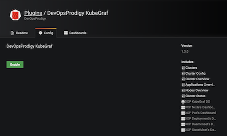
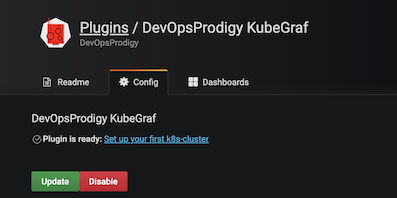
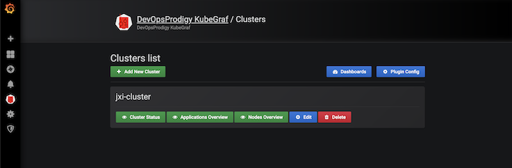

2 优秀的Grafana K8S 插件-DevOpsProdigy KubeGraf
DevOpsProdigy KubeGraf 是一个非常优秀的 Grafana Kubernetes 插件，是 Grafana 官方的 Kubernetes 插件 的升级版本，该插件可以用来可视化和分析 Kubernetes 集群的性能，通过各种图形直观的展示了 Kubernetes 集群的主要服务的指标和特征，还可以用于检查应用程序的生命周期和错误日志。
环境要求
要安装使用 DevOpsProdigy KubeGraf 插件需要满足以下要求：
- Grafana > 5.0.0 版本
- 需要在
Kubernetes集群上部署Prometheus + node-exporter + kube-state-metrics - 依赖
Grafana-piechart-panel插件
1 安装 Prometheus Operator
我们这里来使用 Prometheus Operator，这个 Operator 通过抽象化 Prometheus 的部署来我们提供了更加简单方便的方法来使用 Prometheus，执行如下命令在 monitoring 命名空间下面安装 Prometheus Operator：
kubectl create ns monitoring
- Enable grafana with peristent volume
prometheus-operator-values.yml
# We don't need the alertmanager for this demo
alertmanager:
enabled: false
# This configuration means all ServiceMonitors in the namespsace will be picked up
# Use with caution!
prometheus:
prometheusSpec:
serviceMonitorSelectorNilUsesHelmValues: false
serviceMonitorSelector: {}
grafana:
persistence:
enabled: true
type: pvc
size: 5G
storageClassName:
1-1 安装
$ cd /k8s_sap/test/k8s-prometheus-custom-scaling
$ helm install kube-prom stable/prometheus-operator -f helm-values/prometheus-operator-values.yml --namespace monitoring
$ kubectl get pods -n monitoring
NAME READY STATUS RESTARTS AGE
kube-prom-grafana-6d4c5bc7f4-qzk78 3/3 Running 0 15m
kube-prom-kube-state-metrics-76558456fc-gfmcd 1/1 Running 0 15m
kube-prom-prometheus-node-exporter-r72xd 1/1 Running 0 15m
kube-prom-prometheus-opera-operator-5c7bd49d7c-5xfs9 2/2 Running 0 15m
prometheus-kube-prom-prometheus-opera-prometheus-0 3/3 Running 1 15m
$ kubectl get svc -n monitoring
NAME TYPE CLUSTER-IP EXTERNAL-IP PORT(S) AGE
kube-prom-grafana ClusterIP 10.102.30.65 <none> 80/TCP 16m
kube-prom-kube-state-metrics ClusterIP 10.99.95.81 <none> 8080/TCP 16m
kube-prom-prometheus-node-exporter ClusterIP 10.98.248.155 <none> 9100/TCP 16m
kube-prom-prometheus-opera-operator ClusterIP 10.107.123.72 <none> 8080/TCP,443/TCP 16m
kube-prom-prometheus-opera-prometheus ClusterIP 10.99.222.171 <none> 9090/TCP 16m
prometheus-operated ClusterIP None <none> 9090/
kubectl port-forward svc/grafana -n monitoring 3000:3000
admin
prom-operator
2 特性
该插件包含3个主要的信息页面，其中包含有关 Kubernetes 集群的详细信息。
2-1 应用概述
该插件可以显示 Kubernetes 集群上面的应用的一些基本监控信息：
- 应用程序逻辑图
Kubernetes对象的分布- 可视化应用程序的生命周期和基本特征信息
- 在集群中允许访问的服务端口的描述信息

2-2 集群状态
- 集群和集群节点的状态信息
- 监控的应用程序生命周期的详细信息
- 集群中服务所在位置的可视化

2-3 节点概述
- 集群节点信息
- 已使用和已分配资源（内存、CPU 利用率）以及容器数量的信息
Pods的物理分布

2-4 Dashboards
除了在插件主页上提供了常见的信息之外，该插件还提供了另外5个Dashboard供我们来跟踪集群的各种性能指标。
- node dashboard
这是一个带有节点指标的 Dashboard，它可以显示资源的使用情况，例如 CPU 利用率、内存消耗、空闲/iowait 模式下的 CPU 时间百分比以及磁盘和网络的状态。

- pod dashboard
可以根据所选择的 Pod 来显示对应的资源使用情况。

- deployments dashboard
以 Deployment 为维度来显示对应的资源对象相关的资源使用情况。

- statefulsets dashboard
- daemonsets dashboard
上面三个 Dashboard 显示了可用/不可用的应用程序的副本数量以及这些应用程序的容器状态，还会跟踪容器的重启。
3 安装
我们这里的 Grafana 同样是安装在 Kubernetes 集群上面的，所以我们需要进入到容器中进行安装：
$ kubectl exec -it kube-prom-grafana-6d4c5bc7f4-qzk78 -n monitoring sh -c grafana
/app $ grafana-cli plugins ls
Restart grafana after installing plugins . <service grafana-server restart>
usr/share/grafana $ grafana-cli plugins install devopsprodigy-kubegraf-app
installing devopsprodigy-kubegraf-app @ 1.3.0
from: https://grafana.com/api/plugins/devopsprodigy-kubegraf-app/versions/1.3.0/download
into: /var/lib/grafana/plugins
✔ Installed devopsprodigy-kubegraf-app successfully
Restart grafana after installing plugins . <service grafana-server restart>
# 如果没有安装 Grafana-piechart-panel 插件同样需要安装
$ grafana-cli plugins install Grafana-piechart-panel
installing Grafana-piechart-panel @ 1.4.0
from: https://grafana.com/api/plugins/Grafana-piechart-panel/versions/1.4.0/download
into: /var/lib/grafana/plugins
✔ Installed Grafana-piechart-panel successfully
Restart grafana after installing plugins . <service grafana-server restart>
插件安装完成后需要重启 Grafana 才会生效，我们这里是 Pod，所以直接删除 Pod 重建即可（当然前提是需要对插件目录做好持久化）:
kubectl scale deployment kube-prom-grafana --replicas=0 -n monitoring
kubectl scale deployment kube-prom-grafana --replicas=1 -n monitoring
Pod 删除重建完成后插件就安装成功了。然后通过浏览器打开 Grafana 找到该插件，点击 enable 启用插件。

点击 Set up your first k8s-cluster 创建一个新的 Kubernetes 集群:

- URL 使用
Kubernetes Service地址即可：https://kubernetes.default:443 - Access 访问模式使用：
Server(default) - 由于插件访问
Kubernetes集群的各种资源对象信息，所以我们需要配置访问权限，这里我们可以简单使用kubectl的kubeconfig来进行配置即可。 - 勾选
Auth下面的TLS Client Auth和With CA Cert两个选项 - 其中
TLS Auth Details下面的值就对应kubeconfig里面的证书信息。比如我们这里的kubeconfig文件格式如下所示：
$ cat config
apiVersion: v1
clusters:
- cluster:
certificate-authority-data: <certificate-authority-data>
server: https://kubernetes.docker.internal:6443
name: docker-desktop
contexts:
- context:
cluster: docker-desktop
user: docker-desktop
name: docker-desktop
- context:
cluster: docker-desktop
user: docker-desktop
name: docker-for-desktop
current-context: docker-desktop
kind: Config
preferences: {}
users:
- name: docker-desktop
user:
client-certificate-data: <client-certificate-data>
client-key-data: <client-key-data>
- 那么
CA Cert的值就对应kubeconfig里面的<certificate-authority-data>进行base64解码过后的值； Client Cert的值对应<client-certificate-data>进行base64解码过后的值；Client Key的值就对应<client-key-data>进行base64解码过后的值。

对于 base64 解码推荐使用一些在线的服务，比如 https://www.base64decode.org/，非常方便。
- 最后在
additional datasources下拉列表中选择prometheus的数据源。 - 点击
Save & Test正常就可以保存成功了。
插件配置完成后，在左侧侧边栏就会出现 DevOpsProdigy KubeGraf 插件的入口，通过插件页面可以查看整个集群的状态以及相关的 Dashboard 监控图表。
